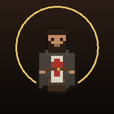

Instala El Guardián Errante
Tenlo como una app: con su icono, a pantalla completa y sin conexión.
- Pulsa Compartir
en la barra de Safari.
- Elige Añadir a pantalla de inicio.
- Ábrelo desde el icono nuevo.
- Abre el menú ⋮ de Chrome.
- Elige Instalar aplicación o Añadir a pantalla de inicio.